Программы
1
Вечеринки в стиле «Игры престолов/Дом дракона»
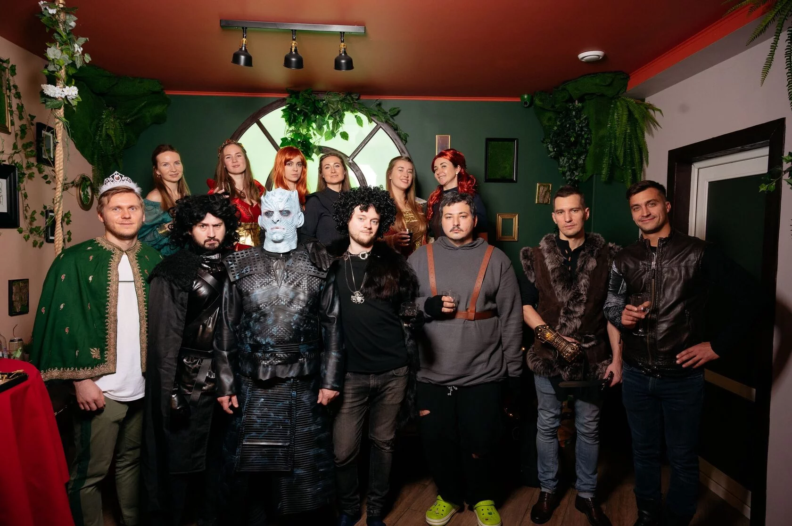
 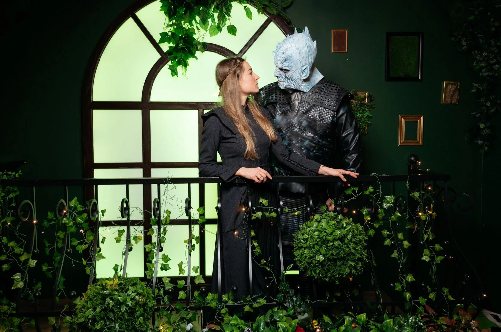
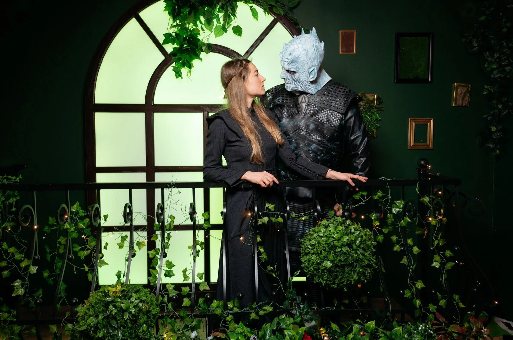


 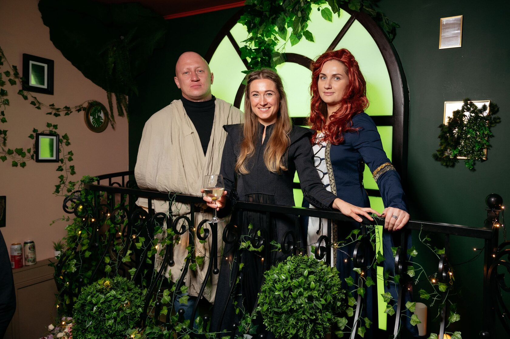
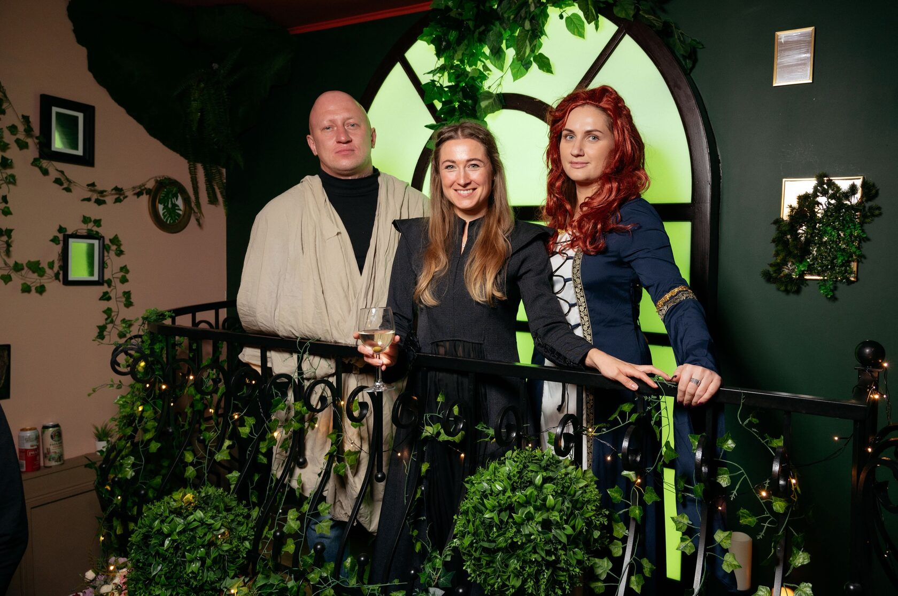
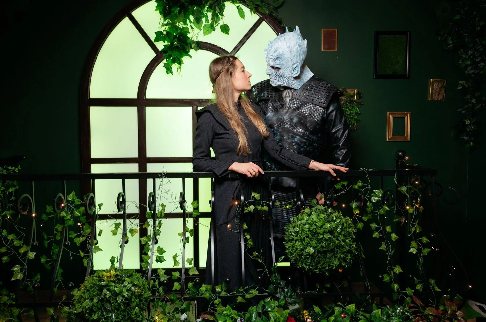
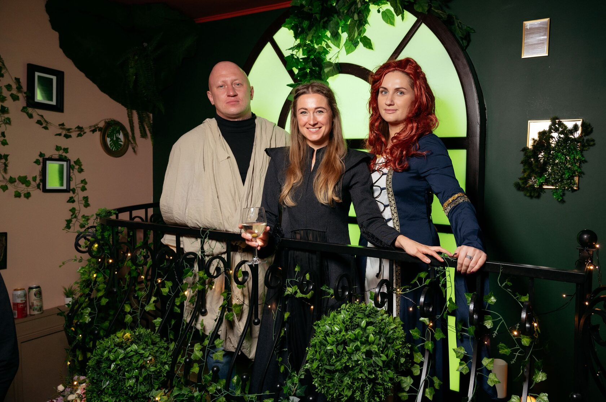
1. Оформление локации
- Фантомки, знамена и флаги различных "домов" из мира "Игры престолов" по всему помещению.
- Cвечи, люстры и торшеры для создания атмосферы средневековой замковой залы.
- Реплики оружия на стенах и оформите столы соответствующими предметами, такими как рыцарские щиты и свитки.
2. Костюмированное мероприятие
Попросите гостей прийти в костюмах персонажей из "Игры престолов". Возможно, вы можете
предложить небольшую награду для самого оригинального костюма или лучшего костюма по выбору
жюри.
3. Игры и конкурсы
- "Турнир интеллекта": Организуйте викторину, вопросы которой будут связаны с сериалом "Игра престолов". Задавайте вопросы о персонажах, событиях, символике и древней истории Вестероса. Для повышения атмосферы можно использовать подходящие реквизиты, такие как Телепатическая Рука с долларов и фотографии персонажей.
- "Тайный альянс": Разделите гостей на команды и предложите им создать секретные альянсы, так же как в мире "Игры престолов". Каждый участник должен найти своего союзника и совместно работать над решением задач и преодолением препятствий. Можно даже дать возможность обмениваться тайными посланиями или использовать шифры для общения.
- "Завоевание территорий": Разделите гостей на команды и предложите им соревноваться за контроль над территориями, представляющими различные "дома" из "Игры престолов". Каждая команда может претендовать на определенные территории, решая задания или соревнуясь в интеллектуальных играх. Команде, которая будет управлять наибольшим количеством территорий к концу игры, будет достаться "Железный трон".
- "Эпическое предсказание": Попросите гостей предсказать развитие событий в вашей собственной истории "Игры престолов". Дайте каждому гостю возможность написать короткую версию того, что, по их мнению, произойдет в дальнейшем, и положить предсказания в ящик. Затем, когда наступит время, откройте предсказания и узнайте, кто оказался ближе всех к реальным событиям.
- "Поиск драконьих яиц": Разбейте гостей на группы и устройте поиск "драконьих яиц" в предопределенной области (например, внутри дома или во дворе). Можно использовать искусственные яйца или декоративные предметы в форме яиц. Придумайте загадки или хинты, чтобы направить команды на след таинственных яиц, оставленных драконами Дейенерис.
4. Музыкальное сопровождение
- Подберите музыкальный плейлист, включающий саундтреки из сериала "Игра престолов" и другую эпическую средневековую музыку.
- Позвольте гостям записать короткие видеообращения в роли героев сериала, и затем их можно показывать на большом экране или проекторе во время вечеринки.
2
Вечеринки в стиле «Глэм Рок»


1. Оформление локации
- Используйте множество металлических, блестящих и глиттерных элементов в декоре помещения. Навесьте блестящие гирлянды и зеркальные шарики для создания мерцающей атмосферы глэм-рока.
- Разместите афиши и изображения знаменитых групп глэм-рока на стенах.
- Добавьте яркое освещение, использование светомузыки и стобоскопических эффектов, чтобы создать энергичную атмосферу на танцполе.
2. Костюмированное мероприятие
Попросите гостей прийти в стиле глэм-роковых исполнителей. Поощряйте яркие костюмы, перья,
блестки, макияж в стиле глэм-рока и разнообразные аксессуары, такие как очки-закатки, шляпы
и перчатки.
3. Игры и конкурсы
- "Лучшее глэм-роковое выступление": Устройте конкурс на лучшее музыкальное выступление в стиле глэм-рока. Предложите гостям выступить с песней или танцевальным номером. Жюри или голосование посетителей выберет победителя.
- Караоке глэм-рок: Организуйте караоке с популярными песнями глэм-рока. Предложите гостям исполнить хиты групп, таких как Queen, David Bowie, T. Rex и других.
- "Создание глэм-рокового образа": Предложите гостям создать свой собственный глэм-роковый образ, используя яркие аксессуары, а также косметику и продукты для волос. Организуйте небольшой конкурс на самый оригинальный глэм-роковый образ.
4. Музыкальное сопровождение
- Создайте плейлист с хитами глэм-рока и другой рок-музыки 70-х годов. Включите песни таких исполнителей, как David Bowie, Queen, T. Rex, Roxy Music и других.
- Разместите фотостену с пропсами в стиле глэм-рока: большие очки, гитары, перья, микрофоны и другие элементы, чтобы гости могли делать яркие и фотогеничные снимки.
- Помните, что ключевыми элементами для успешной глэм-рок вечеринки являются яркие костюмы, музыка и энергичная атмосфера.
3
Тематическая вечеринки в стиле «Барби»


1. Оформление локации
- Используйте яркие и пастельные цвета, такие как розовый, фиолетовый, голубой и белый, в декоре помещения.
- Разместите большие куклы Барби, аксессуары и фантазийные украшения, чтобы создать атмосферу кукольного мира.
- Добавьте в декорацию блестки, гирлянды и цветочные композиции для придания элегантности.
2. Костюмированное мероприятие
Предложите гостям прийти в нарядах, отражающих стиль Барби: платья, туфли на высоких каблуках,
мини-юбки, блестящие украшения и аксессуары, детские заколочки и резинки для волос.
Самое главное в стиле - это яркость, экстравагантность, женственность и безбашенное веселье!
3. Игры и конкурсы
- Модный показ "Создай свой стиль Барби": Предложите гостям составить свой уникальный модный образ, выдайте каждому участнику базовую куклу Барби для создания нарядов, причесок и макияжа.
- Караоке "Исполнение хитов Барби": Подготовьте плейлист с популярными песнями из фильмов и мультфильмов Барби, оцените выступления по оригинальности, стилю и вокальным навыкам. Наградите победителей, например, "Лучшее исполнение", "Самая стильная интерпретация" или "Самое эмоциональное выступление".
- Викторина "Мир Барби": разделите гостей на команды и задайте вопросы о фильмах, мультфильмах, игрушках и истории Барби. Наградите победителей тематическими призами, такими как наборы для создания модных нарядов или аксессуары Барби.
4. Музыкальное сопровождение
- Вот подборка музыки, которая поможет создать атмосферу вечеринки в стиле Барби: Aqua - "Barbie Girl" , Cyndi Lauper - "Girls Just Want to Have Fun", Madonna - "Material Girl" и Katy Perry - "California Gurls"
- Создайте фотозону с большим розовым фоном и украшениями, отражающими стиль Барби.
4
Вечеринки в стиле «Мафия Чикаго»

 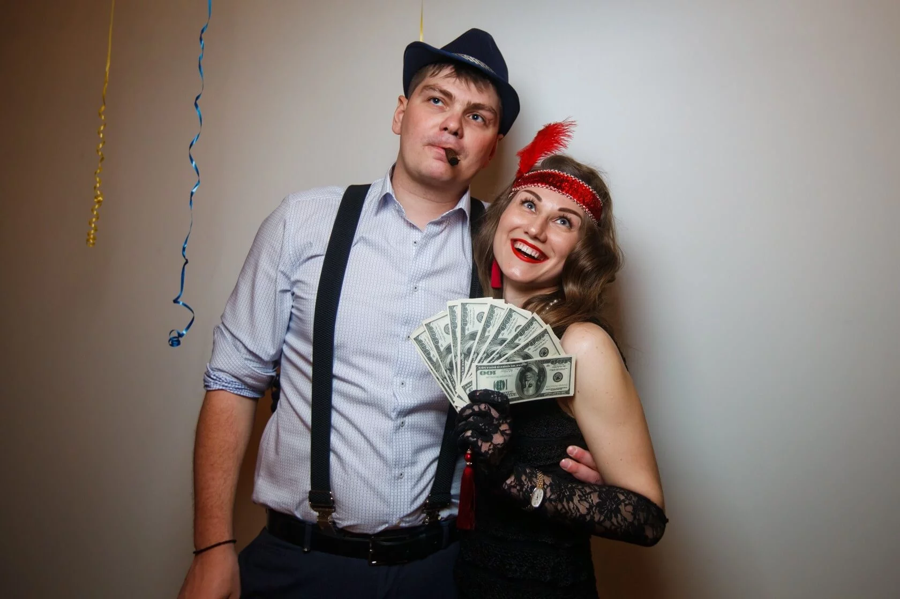
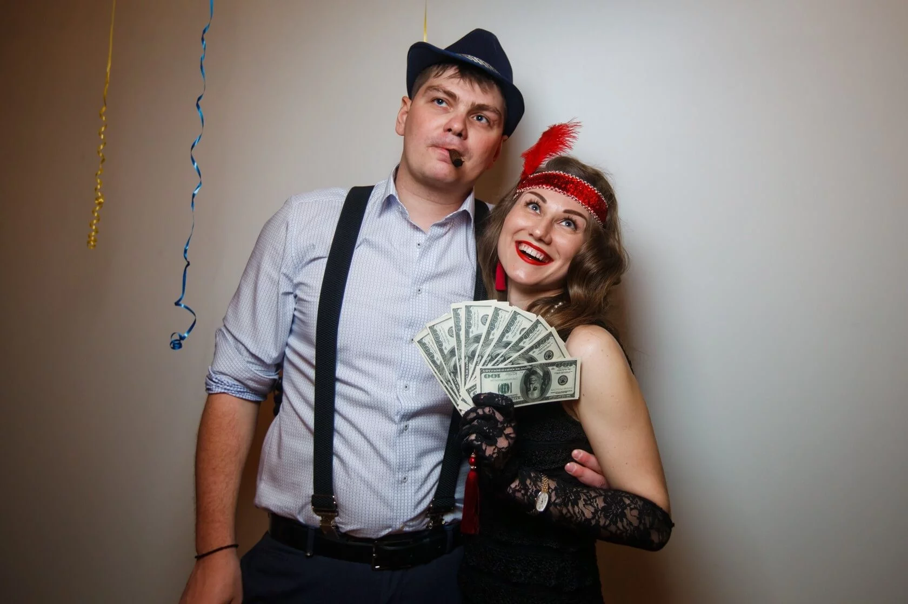

1. Оформление локации
- Создайте атмосферу города Чикаго времен пробитой эпохи: используйте декорации, которые отражают стиль арт-деко, винтажные постеры и элементы уличной атмосферы.
- Используйте цветовую палитру, характерную для этого периода, такие как белый, черный, золотой, серебряный и темно-красный.
- Разместите столы с обложками газет, книгами, старыми фотографиями и атрибутами времен прожитой эпохи.
2. Костюмированное мероприятие
Предложите гостям прийти в костюмах, отражающих стиль того времени: шляпы, перчатки, винтажные наряды,
клетчатые пиджаки и шаровары для мужчин, а также замшевые перчатки, вечерние платья и
жемчужины для женщин.
3. Игры и конкурсы
- Классическая игра "Мафия": разделите гостей на группы мафиози и детективов, чтобы сыграть партию этой захватывающей ролевой игры.
- Казино: организуйте столы для покера, блэкджека или рулетки, чтобы гости могли поиграть в атмосфере риска и азарта.
- Викторина о Чикаго: подготовьте вопросы о знаменитых личностях, событиях и истории города Чикаго и его мафиозных корнях.
- Больше настольных игр! Помимо мафии вы можете сыграть в такие игры, как «Бункер», «Находка для шпиона» и «Перекрёстный огонь»
4. Музыкальное сопровождение
- Создайте плейлист с джазовыми, ритм-энд-блюз или свинговыми композициями для воссоздания атмосферы эпохи.
- Создайте фотозону в стиле Чикаго с декорациями, отражающими времена пробитой эпохи: светящиеся вывески, старинные автомобили, фальшивые пистолеты и аксессуары для фотографий.
- Подготовьте закуски в стиле "американского фаст-фуда" и коктейли, популярные в то время: коктейль "Манхэттен", аппероль шприц и мартини.
5
Вечеринки в стиле «Гэтсби»


1. Оформление локации
- Создайте атмосферу роскоши, используя золотистые и черные тона. Не забудьте о деталях, таких как винтажные фотографии, старинные телефоны или небольшие клетчатые кепки.
- Используйте перья, шелковые ленты, свечи и старинные аксессуары для создания элегантного оформления.
- Разместите столы с драпировками и блестящими скатертьями.
2. Костюмированное мероприятие
Попросите гостей прийти на вечеринку в стиле 1920-х годов: длинные платья с украшениями, жилеты,
бабочки и классические головные уборы.
3. Игры и конкурсы
- "Персонаж из книги": Разрешите гостям выбрать персонажей из романа Френсиса Скотта Фицджеральда "Великий Гэтсби" и играть их роли во время вечеринки. Тот, у кого будет самый правдоподобный образ, станет победителем.
- "Клуб 20-х" Организуйте конкурс на лучшего танцора в стиле чарльстон. Лучше заранее предупредить гостей, чтобы каждый перед вечеринкой успел подготовиться и выучить пару фирменных движений.
- "Казино": Устроить казино с атмосферой прошлого века, где гости могут играть в покер, рулетку или блэкджек. Принесите фальшивые доллары для большей реалисттичности.
4. Музыкальное сопровождение
- Подготовьте плейлист с джазовыми композициями 1920-х годов. Например: Louis Armstrong - "St. James Infirmary Blues", Duke Ellington - "It Don't Mean a Thing и Benny Goodman - "Sing, Sing, Sing (With a Swing)"
- Разместите джазовую группу или наймите диджея, специализирующегося на музыке того времени.
- Не забывайте, что ключевая идея вечеринки в стиле Гэтсби - это роскошь, элегантность и незабываемый опыт для гостей.
6
Вечеринки в стиле «Тим Бертон»


1. Оформление локации
- Используйте темные цвета для создания загадочной атмосферы, такие как черный, фиолетовый и темно-синий.
- Добавьте детали в стиле ведьм, такие как метлы, коты и передвижные декорации в виде котлов с неизвестными ингредиентами.
- Разместите на стенах искусственную паутину, приглушите свет, поставьте свечи для создания нужной обстановки.
2. Костюмированное мероприятие
Попросите гостей прийти в костюмах ведьм, колдунов или злых фей. Вы можете предоставить
некоторые аксессуары для украшения костюмов, такие как шляпы, метлы и косы.
3. Игры и конкурсы
- Конкурс на лучшее варево из магических ингредиентов: Разделите гостей на пары или небольшие группы. Предложите каждой группе приготовить «варево» из заранее подготовленных магических ингредиентов, таких как фрукты, соки или сладости. Обязательным критерием является оригинальное название варева и способ его применения.
- "Загадочные танцы": Подготовьте специальный танцевальный номер, который будет выполняться в середине вечеринки. - Обучите гостей нескольким простым движениям и предложите им присоединиться к танцу во время его исполнения.
- Конкурс на лучшую колдовскую песню или заклинание. Попросите каждого гостя приготовить небольшую колдовскую песню или заклинание. Дайте каждому участнику возможность представить свое произведение перед остальными гостями. Жюри (или все гости) могут проголосовать за самое оригинальное и захватывающее выступление.
4. Музыкальное сопровождение
- Создайте плейлист, включающий тематическую музыку, такую как оркестровые композиции из фильмов о ведьмах или мистическую электронную музыку.
- Подавайте закуски с загадочными названиями, такие как "Суп из глаз тритона" (газировка со льдом) или "Крылышки дракона" (острое куриное мясо).
- Заранее подготовьте мини-бар с тематическими коктейлями в интересных бокалах, добавьте в них пищевые красители, чтобы придать им вид настоящих колдовских зелий.
7
Вечеринки в стиле «Шабаш Ведьм»
1. Оформление локации
- Используйте темные цвета для создания загадочной атмосферы, такие как черный, фиолетовый и темно-синий.
- Добавьте детали в стиле ведьм, такие как метлы, коты и передвижные декорации в виде котлов с неизвестными ингредиентами.
- Разместите на стенах искусственную паутину, приглушите свет, поставьте свечи для создания нужной обстановки.
2. Костюмированное мероприятие
Попросите гостей прийти в костюмах ведьм, колдунов или злых фей. Вы можете предоставить
некоторые аксессуары для украшения костюмов, такие как шляпы, метлы и косы.
3. Игры и конкурсы
- Конкурс на лучшее варево из магических ингредиентов: Разделите гостей на пары или небольшие группы. Предложите каждой группе приготовить «варево» из заранее подготовленных магических ингредиентов, таких как фрукты, соки или сладости. Обязательным критерием является оригинальное название варева и способ его применения.
- "Загадочные танцы": Подготовьте специальный танцевальный номер, который будет выполняться в середине вечеринки. - Обучите гостей нескольким простым движениям и предложите им присоединиться к танцу во время его исполнения.
- Конкурс на лучшую колдовскую песню или заклинание. Попросите каждого гостя приготовить небольшую колдовскую песню или заклинание. Дайте каждому участнику возможность представить свое произведение перед остальными гостями. Жюри (или все гости) могут проголосовать за самое оригинальное и захватывающее выступление.
4. Музыкальное сопровождение
- Создайте плейлист, включающий тематическую музыку, такую как оркестровые композиции из фильмов о ведьмах или мистическую электронную музыку.
- Подавайте закуски с загадочными названиями, такие как "Суп из глаз тритона" (газировка со льдом) или "Крылышки дракона" (острое куриное мясо).
- Заранее подготовьте мини-бар с тематическими коктейлями в интересных бокалах, добавьте в них пищевые красители, чтобы придать им вид настоящих колдовских зелий.
8
Коктейльная вечеринка
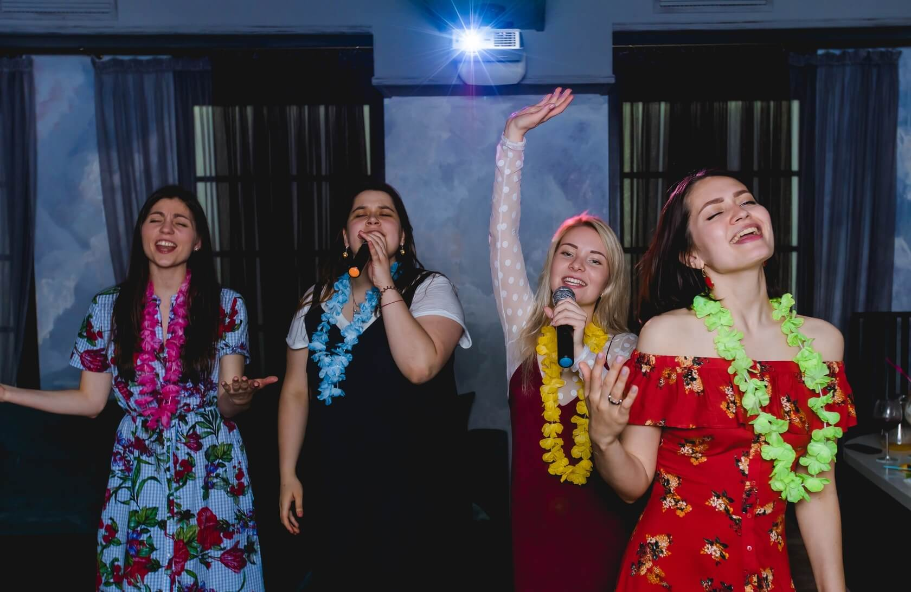
1. Оформление локации
- Создайте тематическое оформление, например, "Тропический рай" или "Винтажный бар".
- Используйте яркие и сочные цвета, чтобы добавить вечеринке праздничности. Расставьте на столах и стенах декоративные элементы, такие как коктейльные зонтики, фрукты и лимоны.
- Разместить столы, стулья и барную стойку, чтобы гости могли комфортно разместиться и насладиться напитками.
2. Костюмированное мероприятие
Попросите гостей прийти в полуформальной одежде. Если вечеринка тематическая, то это могут
быть коктейльные платья и свободные рубашки. Самое главное, чтобы все чувствовали себя
непринужденно и легко.
3. Игры и конкурсы
- "Коктейльный мастер": Организуйте игру, где гости смогут создавать свои собственные коктейли и соревноваться за звание лучшего миксолога.
- "Мастер-класс": Предложите гостям возможность участвовать в мастер-классах по приготовлению коктейлей или дегустации различных сортов спиртных напитков.
- Пригласите профессионального бармена, который будет готовить и представлять коктейли перед гостями.
4. Музыкальное сопровождение
- Организуйте живую музыку или DJ-сет, чтобы создать атмосферу танцев и веселья.
- Подготовьте небольшие подарки или сувениры для гостей, связанные с коктейльной тематикой, например, коктейльные шейкеры или бокалы.
- Разработайте разнообразное меню, включающее безалкогольные и алкогольные варианты.
9
Вечеринки в стиле «Индейцы»
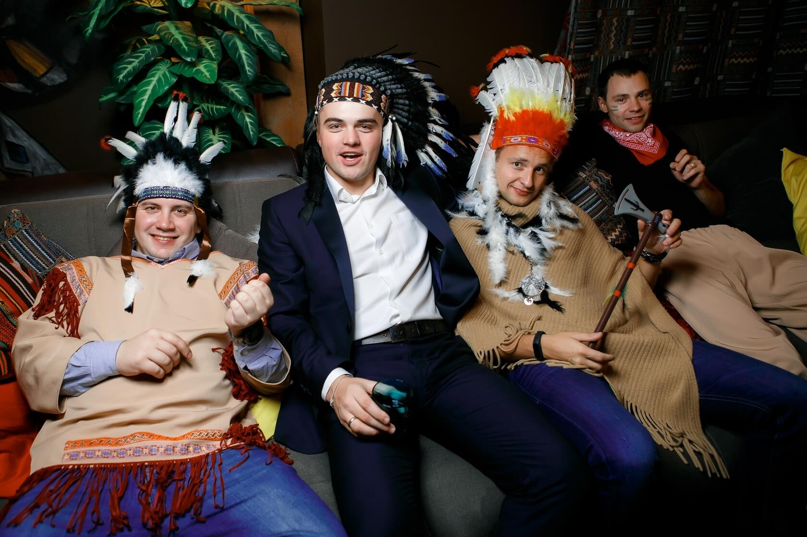
1. Оформление локации
- Используйте натуральные цвета, такие как землистый и песочный, чтобы создать атмосферу природы. Также можно добавить яркие акценты в виде красного, оранжевого или терракотового цвета, чтобы оживить декор.
- Расставьте фигуры или силуэты индейцев, тотемы, перья, бусины и другие элементы, характерные для их культуры. Вы можете использовать изображения на баннерах, флажках или наклейках.
- Создайте племенные символы, которые будут отражать имена или идентичность гостей. Это может быть названия животных или комбинации символов, которые связаны с их личностью.
2. Костюмированное мероприятие
Попросите гостей прийти в нарядах стиле индейцев. Мужчины многих племен часто ходили с
неприкрытым торсом и носили кожаные атрибуты, а женщины обычно надевали длинную юбку с
рубашкой, мантией или туникой. И не забывайте о пончо!
3. Игры и конкурсы
- "Танцы огня": Организуйте конкурс на самый энергичный и завораживающий танец огня. Гости могут использовать светящиеся предметы или специальные элементы для создания зрелищного выступления.
- "Тотемы": Предложите гостям создать собственные тотемы из различных материалов, таких как глина, дерево или гипс. Победителем будет самый оригинальный и выразительный тотем.
- "Стрелки": Организуйте конкурс метания стрел в мишень. Гости могут использовать плотные картонные трубки или дротики с безопасными наконечниками для метания в стремлении попасть в цель.
4. Музыкальное сопровождение
- Создайте плейлист с традиционными индейскими мелодиями и песнями на флейте или барабане. Современные композиции, вдохновленные индейской культурой, например, музыкальные произведения группы "Redbone" или "Native American Music Awards".
- Разместите фотозону с аутентичными элементами в декорациях, например, тотемными столбами или коврами с индейскими узорами. А еще можно расставить уютные вигвамы.
- Подайте напитки, вдохновленные народной культурой, например, мокахвину (традиционный напиток из индейского народа Мокасин). Из еды отличным вариантом станут жареные кукурузные лепешки.
10
Вечеринки в стиле «Космос»
1. Оформление локации
- Используйте темные цвета и подвесные звезды, чтобы создать иллюзию космического пространства.
- Разместите лунные и планетарные декорации по всему помещению.
- Используйте голографические материалы для создания эффекта будущего и космического сияния.
2. Костюмированное мероприятие
Попросите гостей одеться в космические костюмы: пришельцы, астронавты или персонажи из
фильмов о космосе. А еще можно раздать им светящиеся аксессуары.
3. Игры и конкурсы
- "Гравитационный лабиринт": создайте препятствия из надувных шаров, которые нужно будет преодолеть, избегая их соприкосновения.
- "Калькуляторы на Марсе": Разделите гостей на пары или команды и дайте им серию математических задач, специфичных для космоса, которые нужно решить в ограниченное время. Команда с наибольшим количеством правильно решенных задач выигрывает.
- "Сила Тяжести": Разделите гостей на команды. Каждая команда должна передвигать шарик от одного конца комнаты до другого без использования рук, только с помощью выстрелов воздухом из трубки или палочки. Время команды, которая перенесет шарик быстрее всех, выигрывает.
4. Музыкальное сопровождение
- Создайте плейлист с атмосферной музыкой. Включайте спокойные и умиротворяющие треки, которые создают атмосферу покоя и загадочности космоса. Если хотите добавить энергию на вечеринке, добавьте в свою подборку треки с применением синтезаторов и создайте ретро-футуристическую атмосферу.
- Наймите фокусника или иллюзиониста, который покажет фокусы, не виданные землянам.
- Пригласите астронома или научного лектора, чтобы рассказать интересные факты о космосе.